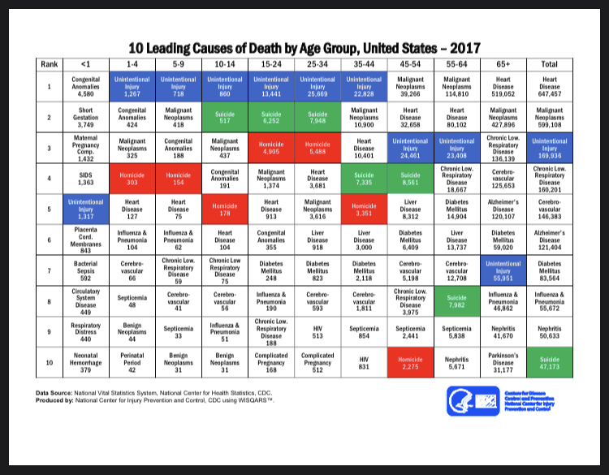

This website will go over the importance of mental health, resources available, donations, and advocracy for mental health.
Please note that if you or a loved one is in immediate danger, do not use this website to replace emergency services.
Learn moreAccording to the World Health Organization, 800,000 people die from suicide globally. Approximately ever fourty seconds, somebody attempts suicide.
The CDC states that it is shown that in America that the leading cause of death (aside from accidental injuries) is suicide from ages 10-34 in a report from 2017.
So what is the reason behind suicide? It's mostly due to a decline in mental health.
A decline in mental health can be brought on by outside forces (i.e grief from loss of a loved one). Other times, it could be possible that people might have an underlying mental illness they have no idea about.
If that's the case, then why don't people just get help? It should be simple, right? Well, apparently not so.
A survey by SWHELPER showed that out of 176 people, only 50% of that count knew how to access mental help.
A reason behind the lack of general knowledge behiind why do people not know how to access mental health services
is because of the negative stigma surrounding mental health. Admit it, most people whenever they think of a mentally ill
individual most likely think of the "crazy and insane" people in the creepy asylums in horror movies. So the general public
kinda filters out mental illness as just something that happens to the mentally insane and will never happen to them.
However, mental illness isn't always just your psychotic disorders. Sometimes mental illness can be in the form of clinical depression,
bulliama nervosa, anorexia, anxiety, PTSD, Tourette's syndrom, autism, ADHD, OCD, and so on. Just beacuse you have a mental disorder,
doesn't necessarily mean that you're insane.
In fact, insanity is used to label patients who are unable to properly process reality. Stuff like believing they are in an
entirely different dimension, they are deluded with illusions of grandeur, etc.
Now that we've adressed the reasons why, what's stopping you from spreading awareness in your own way? You don't have to go out into the world and start a mental health movement, and you don't have to start campaigning for advocracy in mental health (even though that would be nice). What you can do as a person is just change your actions. Instead of adding onto the negative stigma around mental health, you cant change your view point on the subject. You can instead of thinking people with mental illnesses are insane, you can instead think of them as normal people. You can educate others on what is okay and what isn't okay, and you can learn to treat people with illnesses as nomral people instead of people who need special treatment.